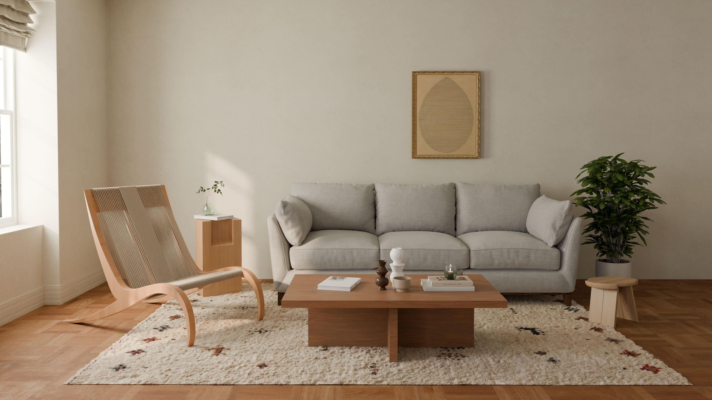
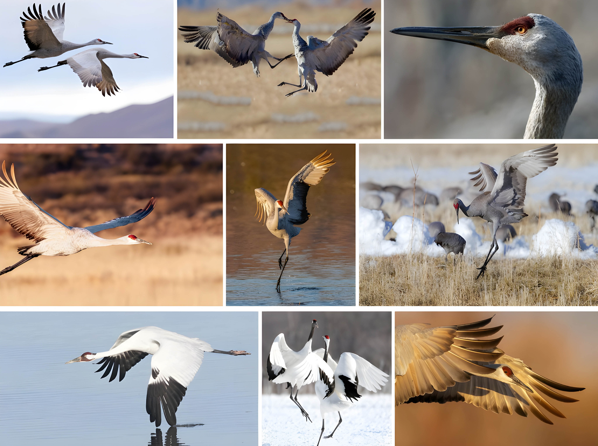
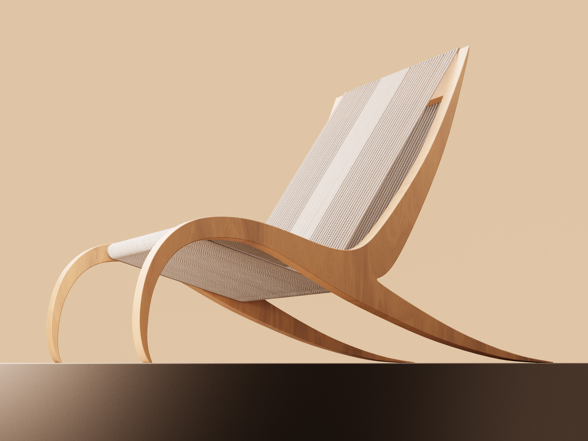
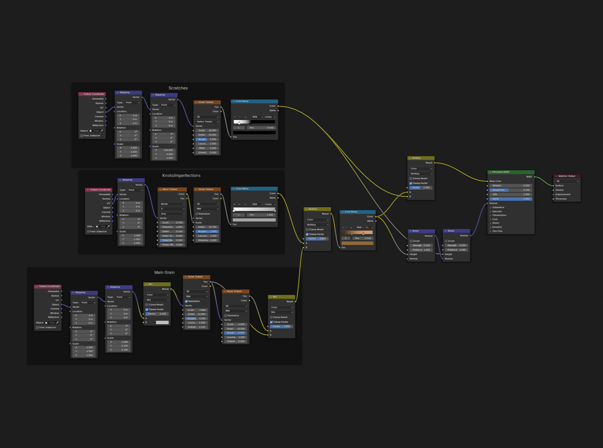

Domains
-
Physical Prototyping
Rendering
Tools
-
Solidworks
Rhino
Blender Cycles
Photoshop
Laser Cutter
Synopsis
-
A lounge chair that embodies the beauty of traditional Crane Dancing.


A Sustainable Lounge Chair Sculpted by Choreography
The Crane Chair is inspired by the "Dongnae" Crane Dance of the Joseonjok Korean ethnic group, where dancers mimic crane mating rituals with flowing fabrics to evoke movement. Elegant and sustainable, the chair brings this traditional art form into everyday life.

Designed for public lounges and residential settings.

Visual lightness was a central theme when considering the combination of materials for the chair.

Modeled in SolidWorks + Rhino, rendered in Blender Cycles.
Why the Crane Dance?
Lounge chairs are more than just seating; they become cherished parts of daily rituals.
The Crane Dance, which captures the graceful nature of cranes in the wild, integrates cohesively with the chair’s circular construction and natural materials.
Art isn't an added luxury or decorative element, but is rather woven into the chair’s function. It evokes emotions of the Crane Dance through the uplifting form, with each curve derived from choreographed movements, enhancing both the experience and the chair's story.

Certain details of the chair take form directly from cranes.
Deriving Form from Movement
Snapshots of defining moments in the choreography were analyzed. I investigated proportion, balance, and the energy of different curvatures from the form of the dancers, watching the dance and capturing their movement quickly on paper.
Informed by Tradition
Inspired by traditional looms and textiles, the Crane Chair’s rope weave honors the fabrics worn by dancers. The central backing beam and tighter weave at the center reflect East Asian furniture-making techniques from that time period, and provides additional back support.
Designed to Be Sustainable
PU (polyurethane) foam, commonly used in lounge chairs, is environmentally harmful. By using recycled cotton ropes for the seating surface, the Crane Chair eliminates the need for PU cushioning, offering flexible support through tension. Combined with sustainably sourcing low carbon materials like pine wood, every part of the Crane Chair is meant to be degradable and fully circular.

Physical Prototype
A physical prototype was constructed to explore an alternate dark walnut finish, and to test the feasability of the rope weave construction.

Seatback carries the same energy of a crane's swept wing during flight.
Ergonomics
Beginning with the existing ergonomic proportions of the Barcelona Chair, the physical prototype experimented with egonomics by increasing the back angle, promoting a more supine alignment for a more relaxed seating position.


Intricate shadows make the chair appear lighter on its feet.

Traditional "T" backrest following traditional furniture-making techniques.
Rendering
Configuring custom procedural textures for a more realistic finish.

Set-up of material and shading nodes in Blender Cycles after importing CAD model from Solidworks & Rhino.